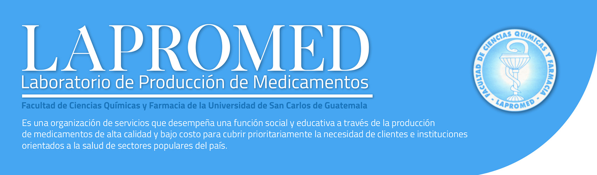

Desafíos y oportunidades del Cloud Computing en Guatemala
Julia Argentina Sierra Herrera
julyargesh@gmail.con
Estudiante de Ingeniería en Ciencias y Sistemas - USAC
Los servicios en la nube que se pueden encontrar son diversos, estos han realizado varios cambios en las empresas, la mayoría de estos positivos, permitiendo realizar tareas de manera sencilla.
¿Por qué deberíamos de utilizar Cloud Computing?
El Cloud Computing, nos ofrece grandes oportunidades porque es lo que se está utilizando, además en la carrera de Ingeniería en Ciencias y Sistemas, la innovación es algo esencial porque el cambio es constante.
En los últimos años América Latina ha hecho una importante apuesta por el desarrollo de las Tecnologías de la Información, situándose en una posición de liderazgo. De hecho, será la zona con el crecimiento más rápido del planeta, con un ritmo 1,74 veces superior que la media mundial, según publica Altag, que calcula que la tendencia de incremento de la industria TI será del 10,3% en 20131.
En la imagen 1 se muestra como Guatemala no preparada para estos cambios, en esta misma grafica se muestran los demás países de Latinoamérica, a pesar que Guatemala no está situada en la última posición, podemos ver que ninguno de los países de Latinoamérica está preparado, lo que genera pérdidas, para empresas internacionales o diferentes trabajos donde se requiera el conocimiento de estas nuevas tecnologías, lo que nos permite visualizar que como estudiantes de ingeniería en sistemas es un compromiso, lograr que las gráficas cambien y nuestra preparación en estas nuevas tecnologías logren un avance no solo en una estadística si no que beneficien el desarrollo de nuestro país.
La revolución digital está trayendo consigo unas necesidades excepcionales de cómputo y almacenamiento. Muchas empresas tuvieron que crear sus propios centros de datos. Sin embargo, su coste es altísimo. La evolución definitiva vino de la mano del modelo Cloud Computing y la ideación y creación de un sistema completo (sostenible y de extremo a extremo) de prestación de servicios TI 2.
¿De qué manera utilizamos Cloud Computing?
Las empresas comúnmente adquieren el Software como Servicio (SaaS, por sus siglas en inglés) porque carecen de recursos para instalar el software, y porque se paga por uso. El utilizar SaaS nos permite que los involucrados del proyecto, tengan acceso a la información desde cualquier dispositivo con el que puedan estar conectados a internet. Esto también proporciona una seguridad de datos, porque cuando se tengan fallos en algún dispositivo, la integridad de los datos no será dañada.
Los servicios del Cloud Computing nos traen diferentes oportunidades, pero el servicio que más ha conseguido un impacto en las empresas ha sido laaS, porque al iniciar una empresa se reducen costos iniciales, permitiendo que sin poseer un espacio físico se tengan los recursos necesarios, obteniendo servicios por consumo, también permite cambios sobre lo que utilizamos, sin generar mayores gastos que se dan en sistemas físicos, lo que permite no tener que realizar cambios en información que generan pérdidas de tiempo y aumento de gastos.
Plataforma como servicio, es utilizado por empresas orientadas a desarrollo de software, este servicio provee lo mismo que laaS con la diferencia que no se debe de preocupar por el mantenimiento. Las empresas eligen utilizar este servicio debido a que tienen herramientas de desarrollo y herramientas empresariales, que proporcionan reducción de tiempos en la programación.
¿Qué oportunidades genera el Cloud Computing?
El Cloud Computing permite que los usuarios se beneficien reduciendo costos y tiempos, que son parte esencial en una empresa al momento de intentar lograr los conceptos de gerencia eficiencia y eficacia, se trata de utilizar la menor cantidad de recursos físicos, se ofrece optimizar recursos, cobros por tiempo de utilización, se evitan pérdidas de tiempo y se logra a la vez evitar contactos con distribuidores, técnicos, entre otros que generan gastos para la empresa.
Logra que sea conveniente en la forma en que se adquieren servicios, la facilidad con que se realizan aplicaciones, e ingreso de datos, permite cambios de acuerdo a los requerimientos sin generar costos adicionales. Es fácil detectar en que se están realizando los gastos y permite visualizar de mejor manera como los cambios generados benefician o afectan las empresas.
¿Qué desafíos nos genera utilizar Cloud Computing?
Al involucrarnos con la utilización del Cloud Computing, el idioma es uno de los desafíos debido a que la documentación y comunicación con los proveedores debe de ser en el idioma inglés.
Los distribuidores de los servicios no se hacen cargo de las perdidas o robo de datos. Entonces el desafío como ingeniero en sistemas es identificar de qué manera se debería de realizar la estructura para utilizar Cloud Computing, conocer que datos están seguros dentro y fuera de los servicios que se están contratando.
En la Imagen 2 se muestra que el 95% de los encuestados en Latinoamérica ven positivo el uso del Cloud Computing, además presenta que el 32% de los encuestados piensa que el inhibidor para su adopción es la seguridad. Por lo tanto, podemos determinar que la seguridad nos da un parámetro para decidir por que utilizar o no el Cloud Computing.
Imagen 2 - Fuente: Comunidad BTZ
Utilizar Cloud Computing genera nuevos desafíos para un programador, ingeniero en ciencias y sistema o cualquier otro cargo relacionado con tecnología, porque comprender de qué manera funcionan estos servicios genera el conocimiento de tecnologías que permiten que la utilización del Cloud Computing sea eficaz.
Conclusiones:
El desafío mas importante es mantenerse actualizado sobre la nueva tecnología que se está desarrollando.
El Cloud Computing nos permite tener una empresa eficiente y eficaz.
El desarrollo en el país también depende de una educación y compromiso con las nuevas tecnologías para poder ser desarrolladas.
El Cloud Computing debe ser utilizado de la forma correcta para lograr que no se exponga la información importante.
Referencias bibliográficas:
Asper (16/12/2016). Los principales desafíos del cloud computing enviroment. (1)
Comunidad Baratz (17/11/2013) La adopción e impacto del cloud computing en el mundo. (2)
Evaluando Cloud (7/06/2015) Cloud Computing en America Latina (3)
Evaluando Software (2017) Predicciones para la nube 2018. (4)
Hernán Calderale. Desafios y oportunidades para los CIOs en la era de la nube. (5)
